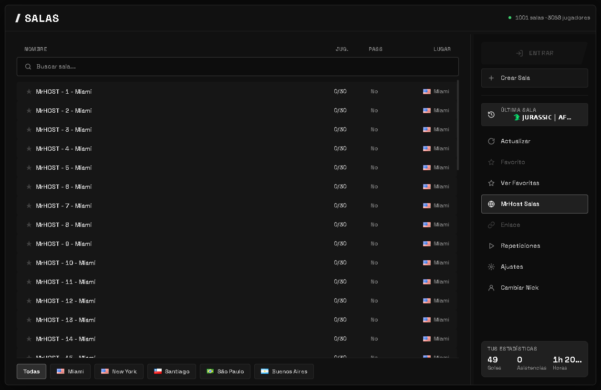
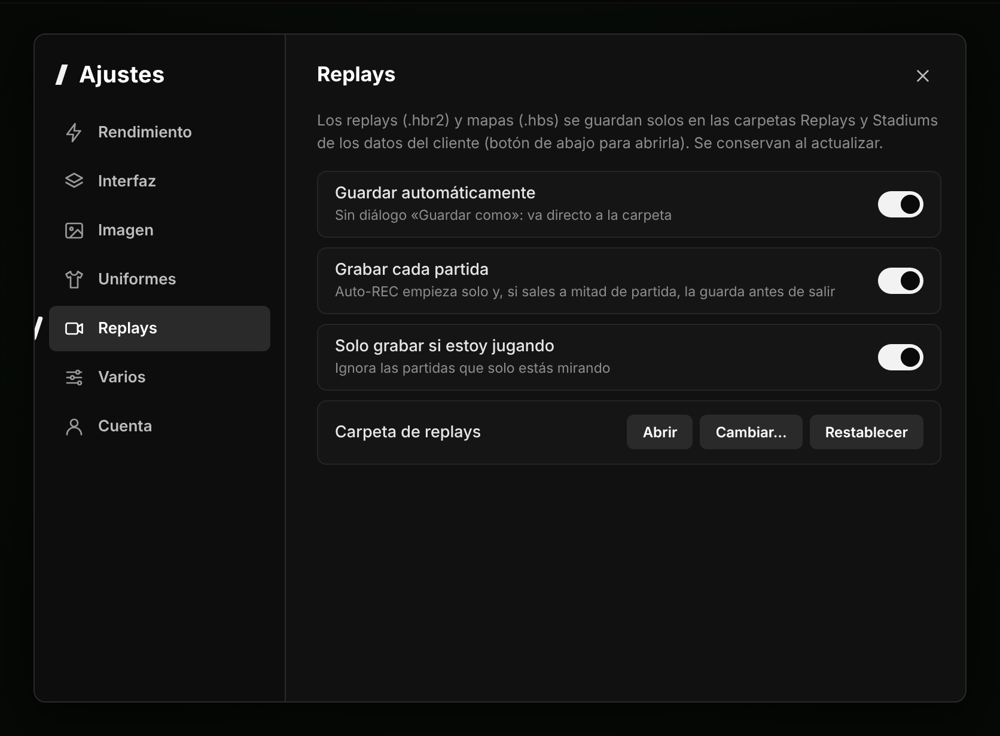

Rally
Cliente no oficial de HaxBall para Windows.
Sin tope de FPS, replays automáticos, estadísticas y 15 marcadores.
Qué trae
- Salas
- Salas de MrHost, tu última sala y favoritas.
- En la partida
- FPS, comandos, atajos de teclado y estadísticas.
- Imagen
- Balón, resolución, saturación, daltonismo y temas.
- Marcadores
- 15 estilos de competiciones reales.
- Replays y uniformes
- Grabación automática y uniformes propios.
Salas

assets/shots/lista-salas.png- El botón de MrHost lista sus salas y entras directo, sin buscar el link.
- Si te echan o se cae la conexión, un clic te devuelve a tu última sala.
- Favoritas con estrella y filtros: con pass, llenas, vacías.
- Si cierras Rally dentro de una sala, te pide confirmar.
En la partida
Los comandos se escriben en el chat. Los resuelve Rally en tu PC y no llegan a la sala.
/fps- Medidor de FPS.
/fps 144pone un tope;/fps 0lo quita. /net- Ping, jitter y pérdida.
/stats- Tus goles, asistencias y horas.
/gif 1 2 3- Avatar animado.
/fakeping 67- El ping que ven los demás. El tuyo sigue real.
!bb- Sales de la sala al instante.
/autorec- Graba cada partida, on u off.
/glass- Panel de la sala translúcido.
Atajos
No actúan mientras escribes en el chat. Tú eliges las teclas.
| Captura de la ventana | F9 por defecto |
|---|---|
| Marcador | Mostrar u ocultar |
| Teclas en pantalla | Mostrar u ocultar |
| GIF y ping falso | Encender o apagar |
| Grabar | Empezar o parar |
| Salir de la sala | Como !bb |
| Pantalla completa | F11 |

assets/shots/atajos.pngFPS
Tres modos: normal, sin límite y sin vsync. Cambiar de modo pide reiniciar.
Teclas en pantalla
WASD o flechas y la patada, en la esquina que quieras. Experimental.
Estadísticas
Cada gol tuyo saca tu total en el chat. Solo cuentan partidas de verdad, y se guardan en tu PC.

assets/shots/sala.pngImagen
Todo esto lo ves solo tú. Los demás siguen viendo el HaxBall de siempre.

assets/shots/imagen.png- Balón
- Del color que mejor veas.
- Resolución
- Estirada a 4:3, 5:4 o la que escribas.
- Saturación
- Del 50 al 200 %, sin filtros sobre la pantalla.
- Daltonismo
- Protanopia, deuteranopia o tritanopia.
- Tema
- Rally o GTA VI.
- Chat
- Opacidad y tamaño de letra.

assets/shots/daltonismo.png
assets/shots/tema-gta6.png15 marcadores
Cambias el marcador de HaxBall por el de una competición real. Solo lo ves tú.
- Champions League
- Europa League
- Premier League
- LaLiga
- Serie A
- Bundesliga
- Ligue 1
- MLS
- Liga Profesional
- Brasileirão
- Copa Libertadores
- Eurocopa 2024
- Copa América 2024
- UEFA Nations League
- Mundial 2026
- Seis posiciones y tamaño del 40 al 200 %.
- Las líneas de color siguen el uniforme que ves en la sala.
- Códigos de hasta 4 letras por equipo. En el Mundial 2026, ESP o ARG ponen la bandera.
- Un atajo de teclado lo oculta y lo muestra.

assets/shots/marcadores-15.png
assets/shots/marcador-ajustes.png
assets/shots/marcador-mundial-banderas.pngReplays y uniformes
Rally graba tus partidas solo, sin el diálogo «Guardar como». Los nombra con fecha, sala y marcador. Un doble clic en cualquier .hbr2 lo abre en Rally.

assets/shots/replays.pngUniformes propios con vista previa y biblioteca. Con un clic añades selecciones y clubes de ejemplo. Los ves solo tú.

assets/shots/uniformes.pngAdemás: respaldo de tu identidad, nick y ajustes en un archivo; Discord con la sala y el marcador (cada dato se apaga por separado); español, inglés y portugués.
Novedades
Cargando…
Punto azul: nuevo. Gris: mejora. Rojo: arreglo.
Descargar
Para Windows 10 y 11. Todas las versiones.
El instalador aún no está firmado: si Windows dice «protegió su PC», pulsa Más información y Ejecutar de todas formas. Baja solo el .exe, y solo de este repositorio.
¿Qué datos envía Rally?
Ninguno. No tiene servidores. Solo se conecta a haxball.com y a GitHub para buscar actualizaciones.
¿Dónde se guardan los replays?
En %APPDATA%\RallyClient\Replays. Ajustes, pestaña Replays, tiene un botón para abrir la carpeta.
¿Y si HaxBall se actualiza?
Las funciones que modifican el juego se apagan solas y el juego sigue normal hasta que salga una versión nueva de Rally.
¿Hay que actualizar siempre?
Cada versión tiene un plazo de unos días. Después hay que actualizar para seguir jugando.
¿Linux o Mac?
Por ahora solo Windows.
Un problema o una idea
Abre un issue con tu versión de Rally (Ajustes, Varios, Acerca de).